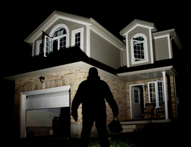

HOME-PROTECTION BUSINESS SOARS AS FEAR HITS GOTHAM
The Desmond family of Gotham Heights spent over $20,000 on a high-tech protection service for their million-dollar home. And they're not alone.
As crime continues to rise throughout Gotham City, the home-security business is booming. "Crime's terrible for the city, but great for business," according to Theo Smytheson, one of the owners of Acme Security Systems.
"If this keeps up, I'll be able to retire by 45. And I'll know I helped protect our families," said Smytheson
So how can you help guard your home or apartment from Gotham's criminals? There are a variety of options, and not all of them are budget-busters.
Worried families can choose from fully customized systems that involve electronic "trip wires" and motion sensors to simpler, cheaper options.
Alarms that trigger when a lock is broken with notifications instantly sent to both the police and a private security company are especially popular.
"You don't have to be Bruce Wayne to protect your family," Katie Tyler of Acme told GCN. "Our entry-level system is based on a monthly fee of only $49.95… that's even cheaper than basic cable."
Some consumer activists in the city aren't so high on many of the security options, however. They claim they offer Gotham citizens nothing more than a false sense of peace of mind.
"These so-called security systems do little more than alert the police, and the security companies charge thousands of dollars for that," according to Nina Rona Touchstone, a reporter for The Gotham Consumer Advocate, a free publication found in many local supermarkets.
"In most burglary situations, the homeowner or resident could simply dial 9-1-1 in the same time it takes a system to do the same thing," said Touchstone. "These overpriced gadgets simply do not keep your families or possessions safe."
The Gotham Police Department also has qualms about home security systems. Some in the department say proliferating home alarms could end up making us all less safe.
Spokesman Randall Dandridge explained that "more often than not, these things trigger too easily and result in over 100 false alarms a month. That's time wasted that could have been spent doing real police work."
Despite such warnings, sales of home security systems have risen by a whopping 35% in the past three months in the city with no sign of a slowdown in sight. For many Gotham citizens, it's better safe than sorry.